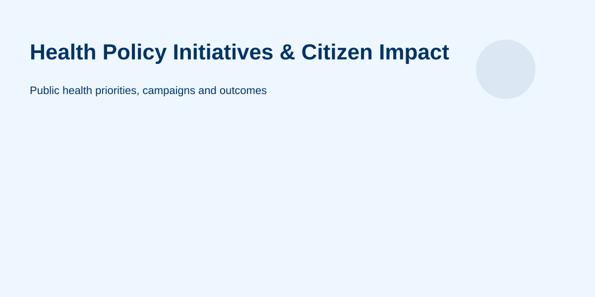

Health policy determines how Nigeria plans, finances, regulates and monitors parts of the health system. The Federal Ministry of Health and Social Welfare describes its mandate as including national health policy, quality of health services, regulation and health security, while specialised institutions handle particular functions such as primary health care and health insurance.
The federal ministry publishes policies, guidelines and other health-sector resources covering areas such as public health, family health, non-communicable diseases, tobacco control, mental health, nutrition and traditional, complementary and alternative medicine. Its current policy library includes documents such as the National Mental Health Act, national guidelines for hypertension and diabetes, and the National Policy and Action Plan on Lead Poisoning Elimination 2024.
This distinction is useful: a policy or guideline explains an intended approach or standard, while a health service is delivered through the institutions and facilities responsible for putting that framework into practice.
The National Primary Health Care Development Agency (NPHCDA) is a parastatal of the Federal Ministry of Health and is responsible for providing technical direction and support for primary health care development. Its mandate includes support to states and Local Government Areas in planning, implementing, supervising and monitoring primary health care.
NPHCDA's current strategic material emphasises equitable access to quality primary health care and collaboration with states, local government health authorities, health workers, development partners and communities.
A federal policy does not mean that every service is delivered directly by a federal ministry in Abuja. Implementation can involve federal agencies, state health authorities, Local Government health structures, public and private facilities, health workers and community organisations.
For primary health care, NPHCDA provides technical and programmatic support while states and LGAs have important implementation responsibilities. NPHCDA also provides a portal for locating primary health centres.
A policy announcement is only one part of implementation. Outcomes can depend on financing, procurement, workforce, infrastructure, supply chains, state and local implementation, public awareness, monitoring and the capacity of facilities. For that reason, citizens should distinguish between an announced policy, an approved programme, a funded activity and an actual service available at a particular facility.
Feedback can help government institutions identify service problems, but the correct complaint channel depends on the issue. Start with the facility or institution's published process where available, retain any reference number, and escalate through the appropriate government channel if necessary.
For policy questions, start with the Federal Ministry of Health and Social Welfare's policy and publications libraries. For primary health care, consult NPHCDA. For health insurance, consult NHIA. These sources are more appropriate for current programme requirements than old social-media posts or third-party summaries.
For institutional context, see our Federal Ministry of Health & Social Welfare, Nigeria Revenue Service and Government Structure pages. The health ministry page provides a broader explanation of the ministry's role and links to official sources.
Last reviewed: September 2026. Health programmes, eligibility, facilities and requirements can change. Confirm current service information with the responsible official institution.